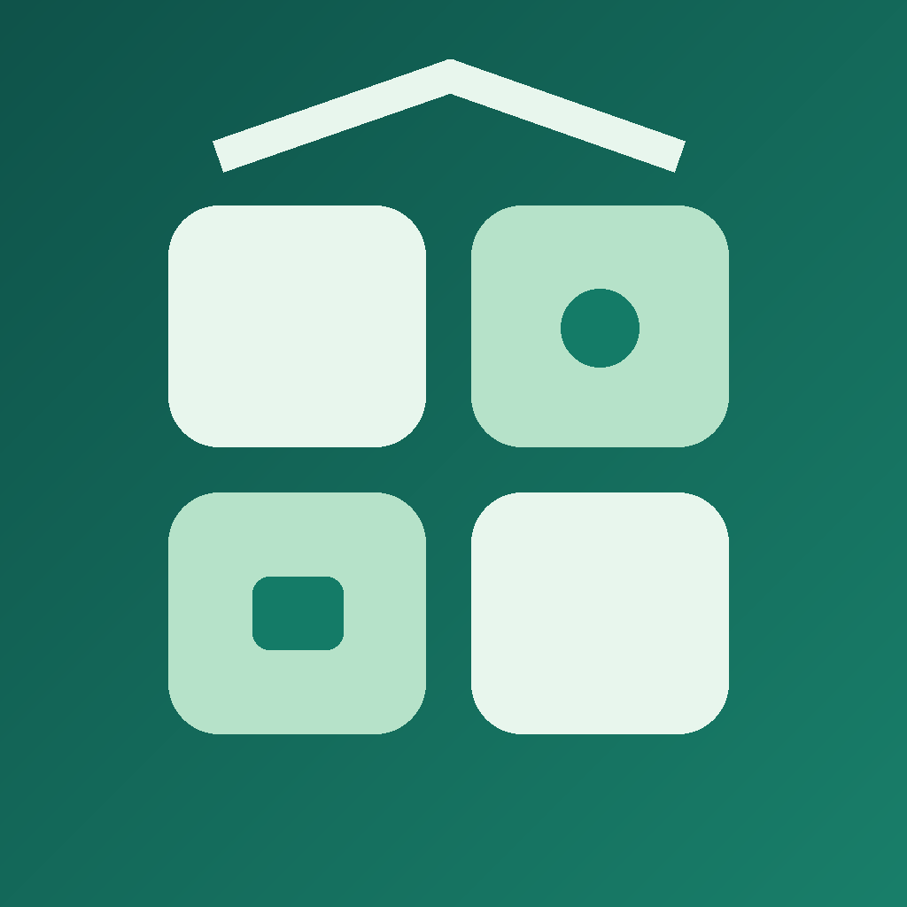

Native iPhone and Android apps · Free
Widget Studio
for Home Assistant
Custom widgets, everyday controls and clear readings for your Home Assistant home. Provided and maintained free of charge, with no tracking, subscriptions or paid upgrades.
Getting connected
Enter your Home Assistant server URL, then choose Sign in with Home Assistant. The iPhone edition also offers local discovery. You sign in through the system browser directly to your home; the app never reads your password. Credentials stay in the iPhone Keychain or Android Keystore-protected private storage and refresh automatically. An access-token option remains available under Advanced. Use HTTPS for remote access; local HTTP is supported only on trusted private networks.
Adding a widget
Save a layout in the app. Hold your iPhone Home Screen, choose Edit → Add Widget, and search for Widget Studio. Hold the added widget → Edit Widget to choose your saved layout. For iPhone Lock Screen widgets, hold the Lock Screen → Customise → Lock Screen, then select Widget Studio in the widget area. On Android, tap Add to Home on a saved layout and confirm your launcher’s pin dialog, or long-press the Home Screen → Widgets → Widget Studio. Android Lock Screen support depends on the device and operating system.
Find useful sources
On connection, Widget Studio scans entity names and measurement types, and reads your existing Home Assistant Energy sources when available. Review suggestions for solar, battery, house load, grid and bin collection. You can scan again from Home or choose sources manually; the app never modifies your Home Assistant Energy configuration.
Appearance and bin collection
Choose System, Light or Dark in Settings. Each widget layout also has an appearance choice. The Bin collection template supports date sensors, Waste Collection Schedule attributes and Home Assistant calendars. Select a source for each bin, choose its label, icon and lid colour, and filter shared events by waste type. Dates are read from your Home Assistant setup; this app does not provide council collection data. Unknown dates and saved schedules are labelled.
Updates and connection issues
iOS and Android control background widget refresh timing. Widgets show the last update and retain saved readings and charts when connectivity drops. Foreground polling defaults to 60 seconds, with free 30-second, 2-minute and 5-minute options. This does not control background widget scheduling. Open the app to refresh and check connectivity. Remote access needs a working HTTPS address or VPN. Charts require numeric readings and Home Assistant Recorder history.
More ways to see your home
Use the Widgets tab to choose text summaries, shopping lists, calendar agendas, gauges, current weather, household presence and dashboard shortcuts. Preview Small, Medium or Large before saving. Per-reading precision changes display formatting only. Lists and presence are read-only; edit tasks in Home Assistant. Calendar agendas use your home time zone.
If a source was renamed or removed, open the layout editor to replace or remove it explicitly. How to add a widget explains placement and shows configurations reported by iOS. Open a sensor chart in the app and touch a time to inspect its reading and coverage.
Get support
Open Settings → Help & Diagnostics (Diagnostics on Android) to describe a problem and preview a report. Choose whether to include the local technical log, then Share report and select your preferred app. Send private reports to the support email below. Nothing is sent automatically; prepare a report offline if needed. Clear diagnostic logs removes the timeline without removing your layouts.
Email support@agenticconsciousness.com.au for app help. Include “Widget Studio” in the subject.
Report an issue or request a feature. Include your iOS or Android version, app version and a description of the issue. Please do not include access tokens, passwords, private server URLs, location data or unredacted screenshots of your home.
Privacy policy · Home Assistant documentation